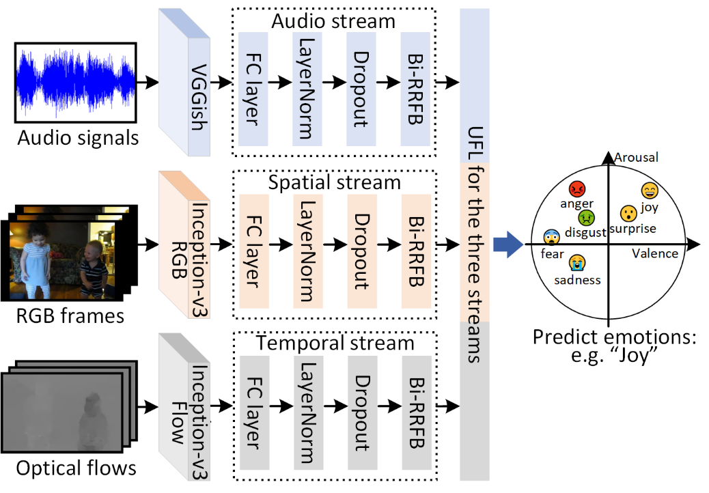
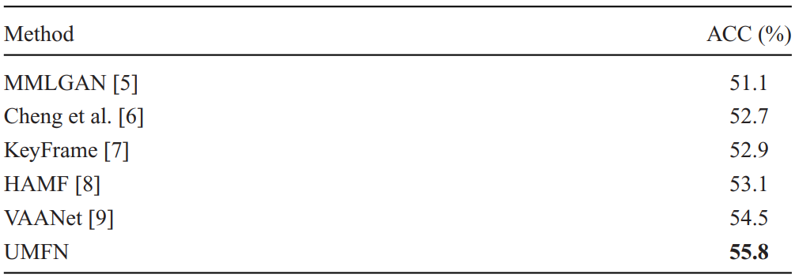
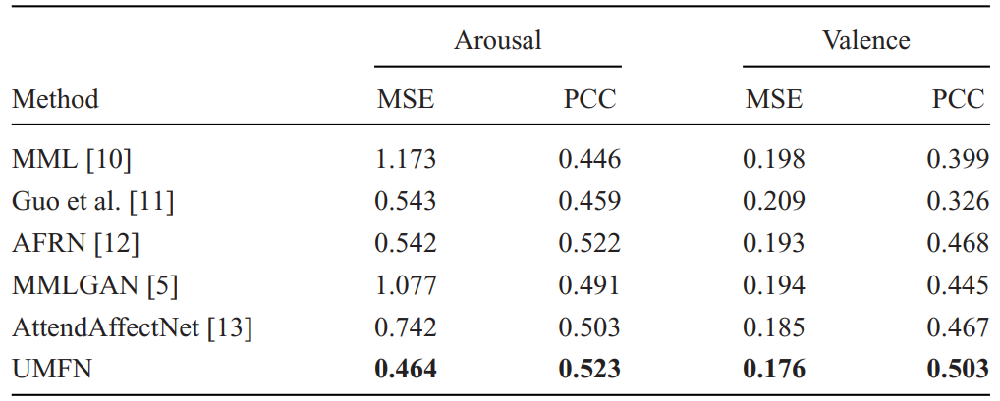

Unified multi-stage fusion network for affective video content analysis
Yun Yi, Hanli Wang and Pengjie Tang
Overview:
Affective video content analysis is an active topic in the field of affective computing. In general, affective video content can be depicted by feature vectors of multiple modalities, so it is important to effectively fuse information. In this work, a novel framework is designed to fuse information from multiple stages in a unified manner. In particular, a unified fusion layer (UFL) is devised to combine output tensors from multiple stages of the proposed neural network. With the unified fusion layer, a bidirectional residual recurrent fusion block (Bi-RRFB) is devised to model the information of each modality. Moreover, the proposed method achieves state-of-the-art performances on two challenging datasets.
Method:
The main framework of the proposed method is illustrated in Fig. 1. A unified multi-stage fusion network (UMFN) is proposed to uniformly fuse information from multiple stages. Specifically, UFL is designed to combine information from multiple stages in a unified way, and the tensor of fusion weight in UFL is learned by using an optimization algorithm. Moreover, Bi-RRFB is devised to model the information of each modality.

Fig. 1 Overview of the proposed UMFN.
There are three streams in UMFN, i.e., audio stream, spatial stream and temporal stream, which correspond to three modalities. Except for the input dimension of the first fully connected (FC) layer of the stream, these three streams have the same network architecture. In each stream, the feature vectors of the corresponding modality are mapped to a fixed dimension by using the first FC layer of the stream. After this FC layer, layer normalization and dropout are utilized to regularize the activities of neurons. Then, the output tensors are fed into Bi-RRFB, and the output tensors from the three Bi-RRFBs are fused by using UFL.
Results:
Experiments are conducted on two challenging datasets, i.e., VideoEmotion and LIRIS-ACCEDE. For evaluation, the VideoEmotion dataset provides 10 training-test splits. In each split, the training set includes 736 videos and the test set contains 365 videos. In all experiments, we follow the official protocols, and report the mean of the 10 predicted accuracy values. The MediaEval 2016 Emotional Impact of Movies Task (EIMT16) is a task of the LIRIS-ACCEDE dataset. This dataset has two affect domains, i.e., arousal and valence. According to the recommendations of the competition organizers, mean squared error (MSE) and Pearson correlation coefficient (PCC) are the official evaluation metrics for EIMT16, and are calculated in the two affect domains, respectively. Table 1 and Table 2 show the comparison with state-of-the-art methods on the two datasets.
Table 1 Comparison with state-of-the-art methods on VideoEmotion.

Table 2 Comparison with state-of-the-art methods on EIMT16.

Source Code:
原站插图：图片暂留白UMFN-V1.0.zip
Citation:
Please cite the following paper if you find this work useful:
Yun Yi, Hanli Wang, Pengjie Tang. Unified multi-stage fusion network for affective video content analysis, Electronics Letters, vol. 58, no. 21, pp. 795-797, Oct. 2022. DOI: 10.1049/ell2.12605.